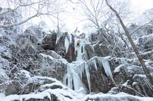

Lat: 58.460935 Long: 11.691599
Populärt och bra område med ca 4 fina isar. Området är relativt issäkert och det växer ofta till is varje år. Isfallen är mellan 15-40m långa och är i graderna mellan WI 3-5. De flesta lederna går att topprepsklättra då det går en stig så att man kan komma upp på berget.
Det finns ca fyra st isfall i området som kan variera i svårigetsgrad berodende på istillväxt. Oftast finns det 2 isar som är 45 meter höga (de första man kommer till). Vänster är en 5:a och höger en 4:a. Det finns 3:a klättring längre in dalen som är jättefina 25-30 mmeter höga. Ännu längre in finns en pelare på 12-15 meter som är are 5-6:a i svårighetsgrad. Det är relativt lätt att sätta topprep på alla isfallen, då det går en stig som man kan gå runt berget.
OBS Kviström är ett naturreservat dvs extra varsamhet när ni vistas i området!!!
Isfallen ligger med ett par hundra meter mellan varandra utefter stigen
Första isfallet, grad 3-5
Andra isfallet efter stigen, grad 3-5
Tredje isfallet, grad 3
Fjärde isfallet, grad 5
Kategori:Bohuslän
Kategori:Stub
Kategori:Is
Copyright (C) Permission is granted to copy, distribute and/or modify this document under the terms of the GNU Free Documentation License, Version 1.3